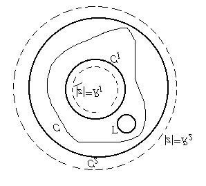

Chapter 9
Applications
第9章
应用
9.1 Real Integrals
9.1 实积分
The residue theorem can be used to evaluate many real integrals by converting them to complex contour integrals.
留数定理可以通过将实积分转换为复围道积分来计算许多实积分。
9.2 Argument Principle
9.2 辐角原理
The argument principle relates the number of zeros and poles of a meromorphic function to a contour integral.
辐角原理将亚纯函数的零点和极点数量与围道积分联系起来。

Figure: Argument principle illustration
图:辐角原理示意